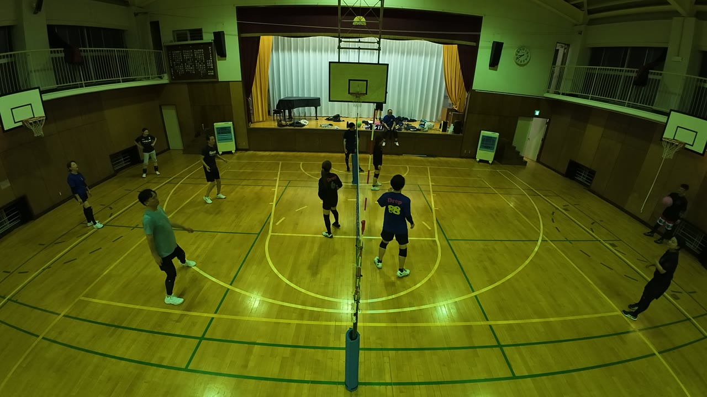
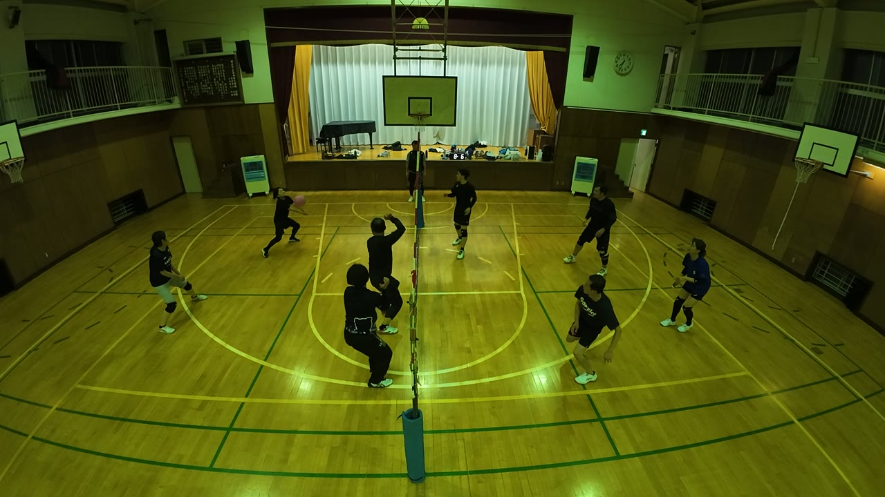
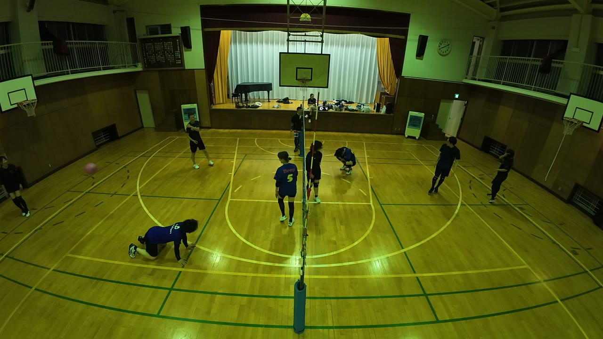
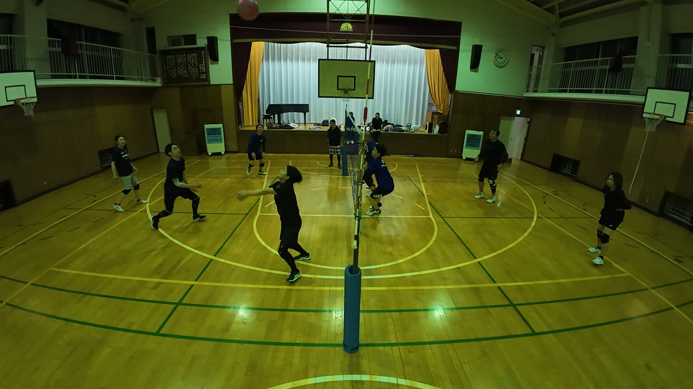
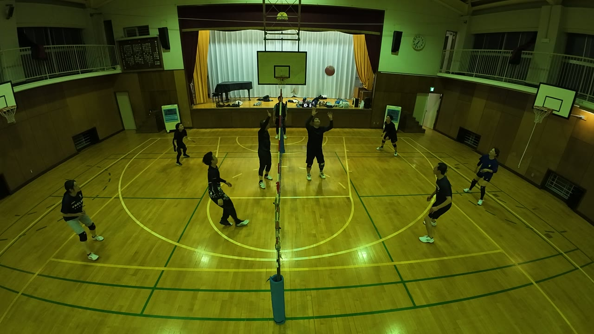
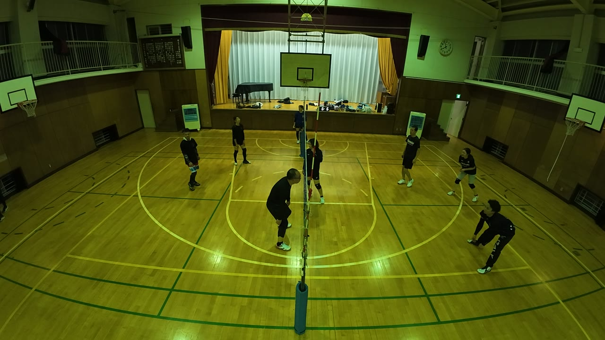
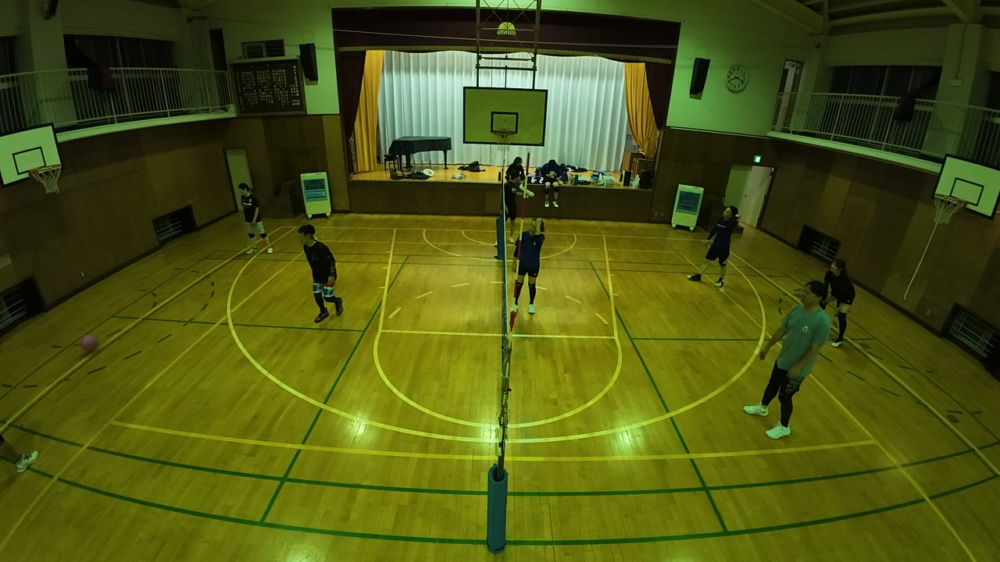
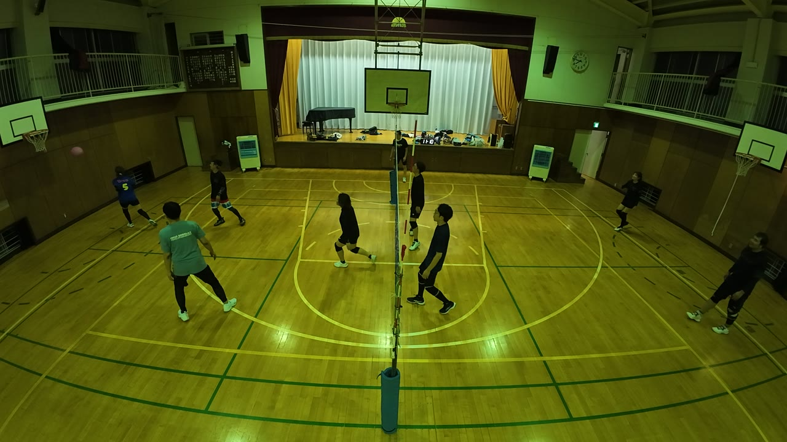
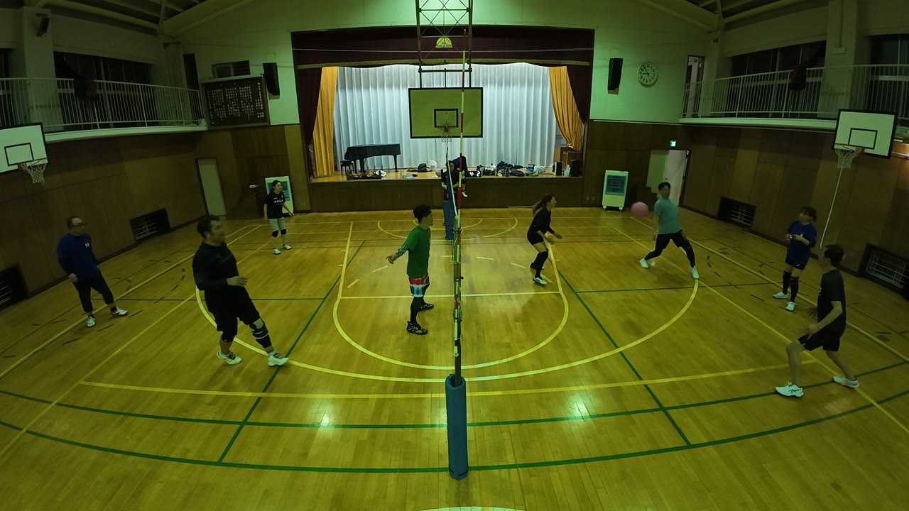

都筑の大会まで、あと1週間。この日はコートの全員が絡む場面が続いた日でした。プレー時間あたりのファインプレーの頻度が、前回よりも21%増えています。写真をタップすると、その場面から動画が再生されます。
ダイジェスト


動画②の28:06。この日いちばんのレシーブ、2本のうちの1本がここです。

動画② 28:06ゆいは、この日ずっと後ろで受け止める人でした。
いちばん難しいのは、たぶん ①19:40 です。ネットに当たった球は落ち方が読めません。それを、下に入って普通の球のように上げています。
もう1人の MVP、ゆりこ。
動画①の03:51。ひとつのラリーで2本続けて拾って、その両方が点につながりました。

動画① 03:51動画①と②で、レシーブだけで5回。
1本目で終わらせず、戻ってもう1本というのは、位置に帰るのが速いということです。④12:24 では、やっさん と2人でつくった場面がフェイントで決着しました。
40:05。練習の前半をしめくくる、最後のラリーです。コートの全員が拾い合って、最後は うっちー のフェイントで決着しました。強く打ち合った末ではなく、空いた場所にそっと落として終わるという終わり方が、この日らしい1本でした。

動画① 40:05こういう「全員が絡んだ場面」は、100分38秒の中で18回。およそ6分に1本の割合で起きています。ほかにも ①12:59、 ①18:05、 ②08:07、 ②28:34、 ④07:36、 ④16:31 など。
あきは、2時間の練習で誕生したファインプレーの、ほとんどに絡んだ人です。
まず動画③の01:27。この日いちばんのレシーブ2本のうちの、1本。短い動画③の、ほとんどそこだけを占める場面です。

動画③ 01:27そして、上げる仕事。あきが上げた球が、そのままアタックになった場面が4回ありました。
拾うほうも止まっていません。 ①08:31、 ①28:37、 ①29:21 のレシーブ。 ②16:45 と ②21:49 では、サーブで自分から点を取りにいっています。
守って、上げて、自分でも攻める。1日を通してこれを続けたのが、あきでした。
動画①の04:37。おおのさんが上げた球は、そのまま味方の強打になりました。

動画① 04:37バックトスは、後ろを見ないで打てる場所に置くプレーです。3回とも、置いた先で味方が打てています。
自分で決めにいく場面もありました。④00:00 のアタックです。
まず、るき。この日いちばん多く決めた人です。
①21:15 の強烈な一打をはじめ、 ①07:21、 ①37:59、 ②18:51、 ②33:28。 ②00:00 は、開始と同時のサーブでした。
そして、こもりん。練習前半の 26:43、29:46、30:20。4分足らずのあいだに、アタックで3本。

動画① 26:43打つだけの人ではありません。①36:38 ではレシーブに入り、④14:27 では かずえ と2人で、レシーブからアタックまでを組み立てています。
そして ①02:54。あき、こもりん、ゆりこ の3人が、それぞれの持ち場の仕事をやり切った1本です。この日の最初のほうに、もう出ていました。
かずえのファインプレー場面ではどれも全員がいきいきと動き、点を決めていました。

動画② 07:45長い場面には、必ずそこにいる人がいます。この日のかずえがそうでした。
動画①の17:24と、動画②の29:55。サーブは、アタックと同じ「自分で点を取りにいくプレー」です。ゆきよのこの2本は、相手を動かしにいったサーブでした。

動画① 17:24
動画④の01:40。手が間に合わないところに、足が出ました。

動画④ 01:40とっさに出た足でしたが、ボールのほうへ体が向いていたからこそ出た足です。狙ってできることではありませんが、あきらめていないと足は出ます。
やっさん はフェイントの日でした。 ①16:03、 ①25:35、 ①26:07（相手の守備が崩れた側へ落とした1本）、 ②26:42。 強打とフェイントを同じ形から出されると、守るほうは一歩目が出せません。
うっちー は ①12:59、 ①15:33 のアタックと、 ①36:21 では ゆい と守りに回っています。
かずお は ①06:01、 ①27:24、 ②25:50 のアタックと、 ①09:20 のサーブ。
けん は ①14:43、 ②12:02、 ②27:31 のアタック。 ①12:22 では、上げる側に回って味方のアタックを引き出しています。
①39:16。ゆきよ が、カメラに向かってアピールしています。 受賞につながるかもしれません。
よいプレーが出たら、どんどんカメラに向かってアピールしてください。
ネット際で、オーバーネットになりかけた場面がありました。大会では、そのまま相手の1点になります。触りにいくか、下がって組み立て直すか。触る前に決めておくだけで変わります。
もうひとつはサーブ。入れば必ずラリーが始まりますが、入らなければ何も起きません。この日はラリーがよく続いた日です。残っているのは、その入口(サーブ)と出口(ネット際)だけです。
都筑の大会まで、あと1週間。この日いちばんのレシーブ2本が、どちらも後ろで待っていた人から出ています。拾えるチームは、最後まで試合ができるチームです。次回を楽しみにしています。
Produced by けんぴー(AI) — この講評は、AIアシスタント「けんぴー」が当日の動画4本(合計100分38秒)を見て作成しました。